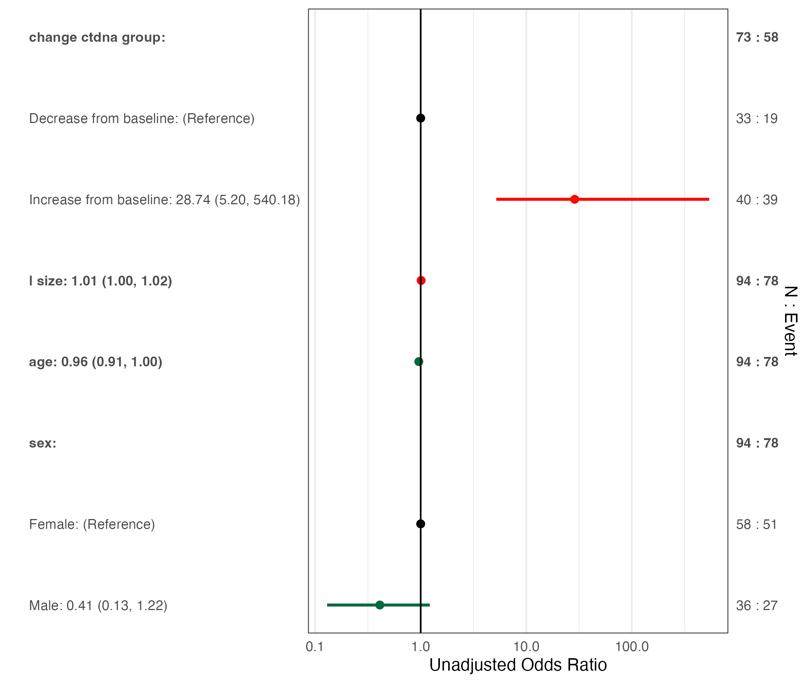

13.3 Forest Plots
Similar to rm_uvsum and rm_mvsum, forest plots can be created from univariate or multivariable models. forestplot2 is deprecated from version 0.1.0. Variable labels are not yet incorporated into the forest plots.
This will default to a log scale, but can be set to linear using logScale=FALSE
forestplotUV(response="orr", covs=c("change_ctdna_group", "sex", "age", "l_size"),
data=pembrolizumab, family='binomial') ### Multivariable Model Forest Plot